Conference diagrams
1. Conference access and security

Diagram text. Edit here for the call, then copy the result back to floor/diagrams/call-access.mmd.
2. Lay of the land for agents

Diagram text. Edit here for the call, then copy the result back to floor/diagrams/call-agents.mmd.
3. Future-state processes

Diagram text. Edit here for the call, then copy the result back to floor/diagrams/call-future.mmd.
4. Redis to the webpage

Diagram text. Edit here for the call, then copy the result back to floor/diagrams/call-architecture.mmd.